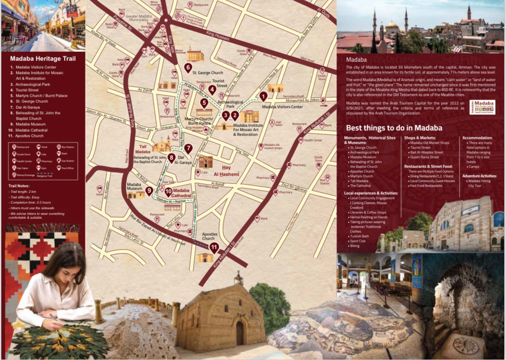
خريطة المسار السياحي
اتبع المسار من مركز زوار مادبا إلى أهم المواقع داخل المدينة.
رحلة تفاعلية عبر التاريخ.. بصوتك. اكتشف مادبا ومركز زوارها ومحتوياته من خلال هاتفك وبطريقة سهلة ومستقلة.
اختر القسم الذي تريد استكشافه، ويمكنك الاستماع إلى الشرح من هاتفك أو سماعاتك.

اتبع المسار من مركز زوار مادبا إلى أهم المواقع داخل المدينة.
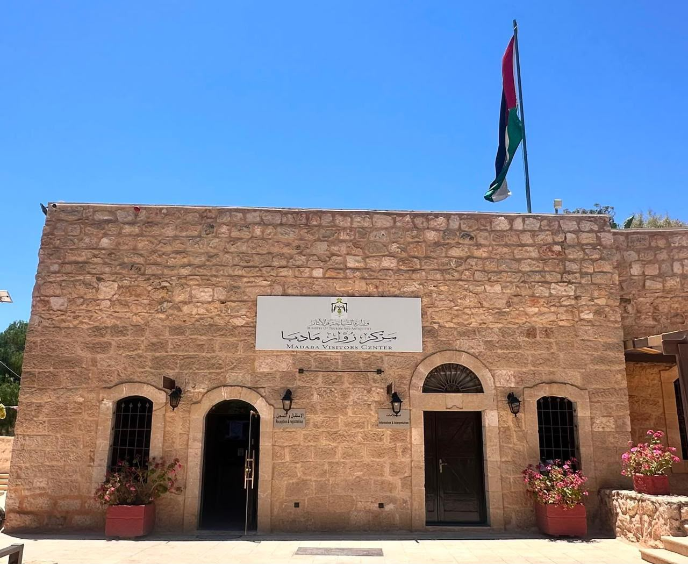
تعرف على المركز والغرف واللوحات والمرافق.
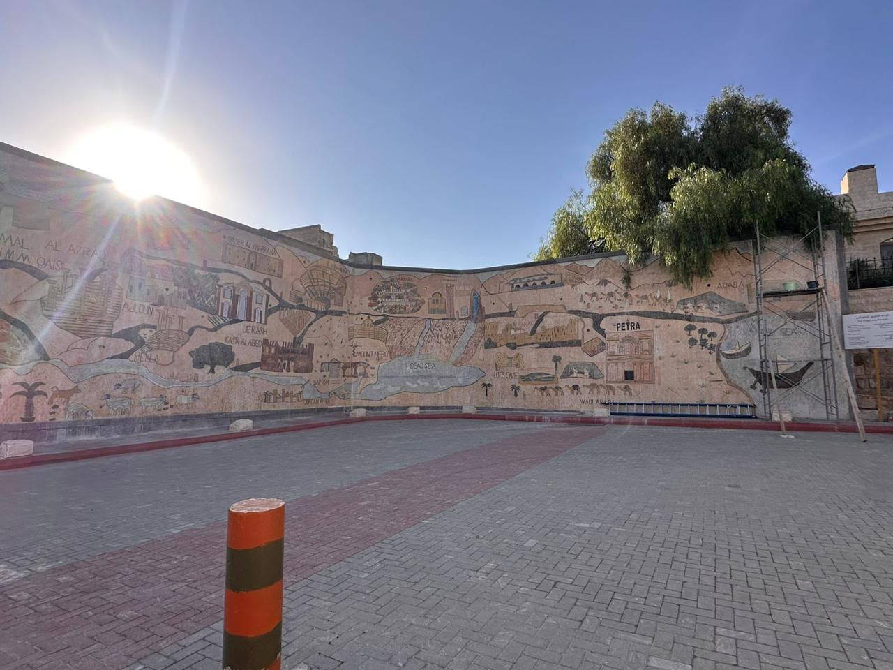
تعرف على الجدارية الفسيفسائية ومعالم محافظة مادبا.
يعرض المركز معلومات وصوراً تساعد الزائر على فهم تاريخ مادبا وتراثها ومساراتها السياحية.
بعد الانتهاء من التعرّف إلى الغرف الخمس في مركز زوار مادبا، يتوجّه السائح إلى المسار التراثي للتعرّف إلى أبرز المواقع السياحية والأثرية في المدينة.
اختر الفيلم لمشاهدته مباشرة، أو افتحه على YouTube.
الجدول المرفق لرسوم الدخول وأوقات العمل.
صور المواقع السياحية التي تشملها مادبا.
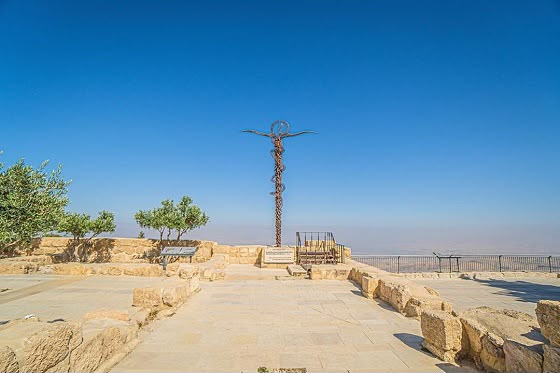
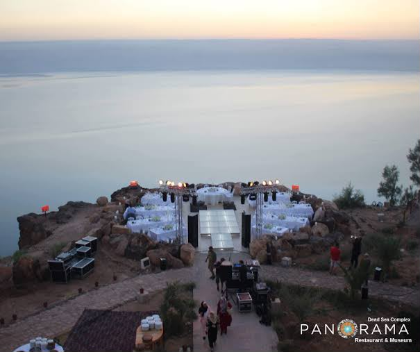

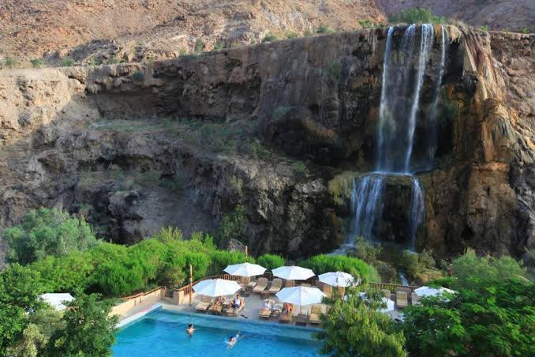
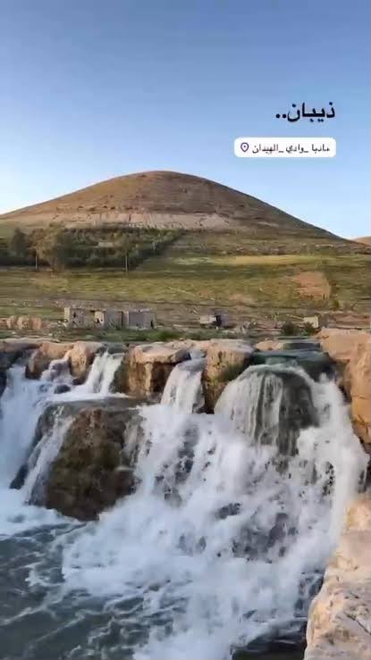
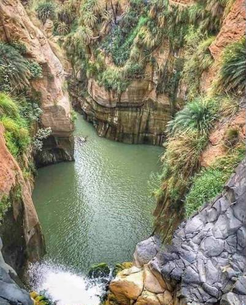
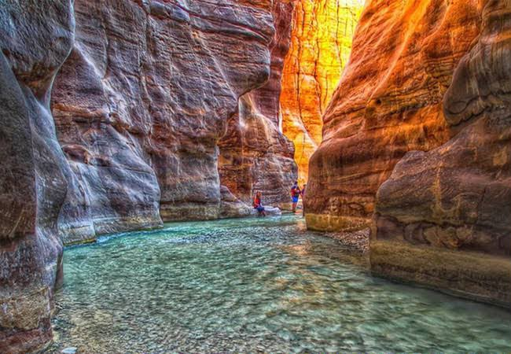
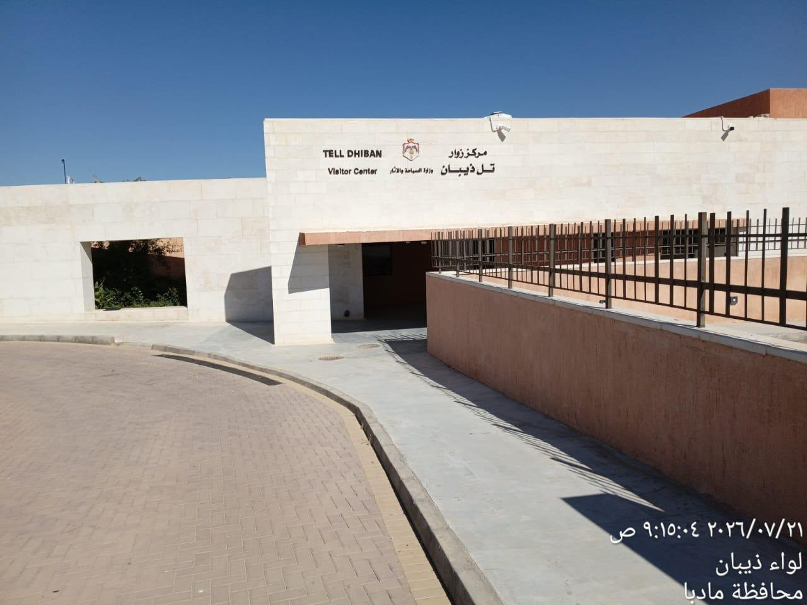
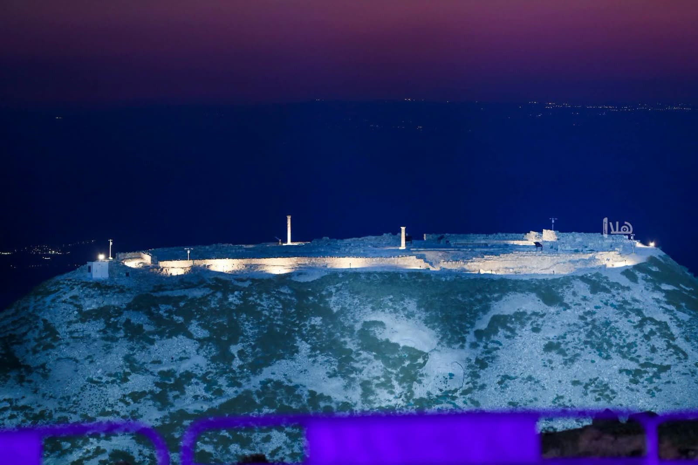
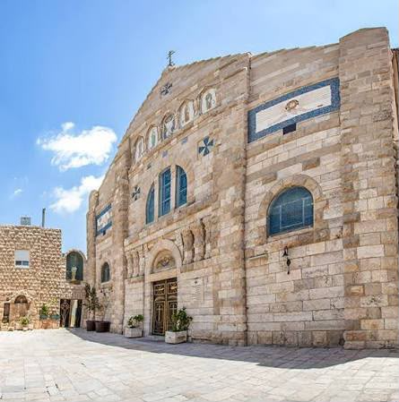
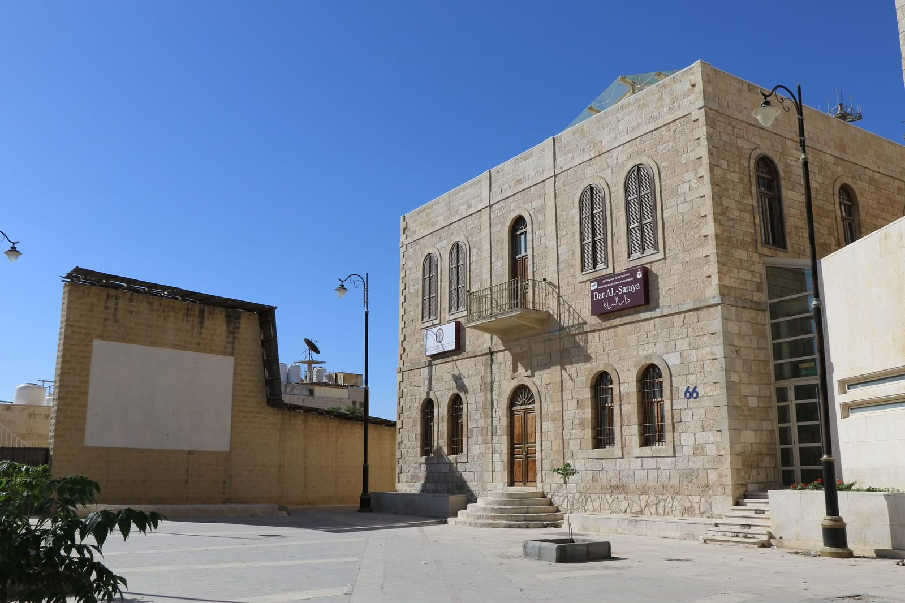
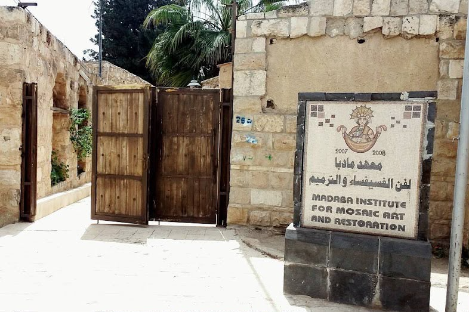
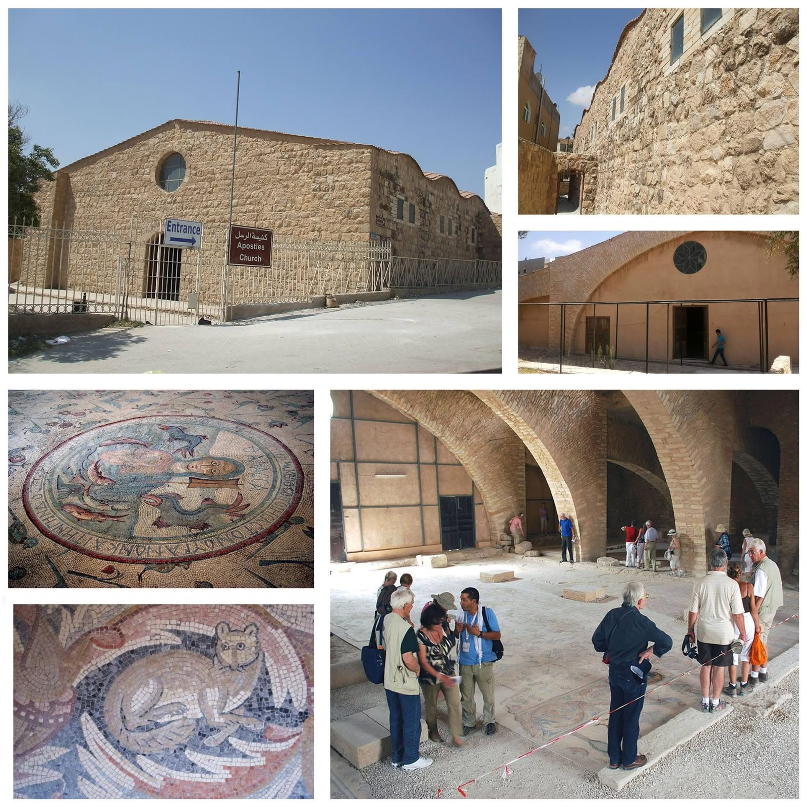
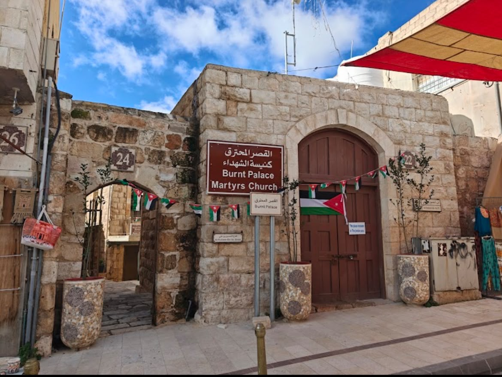